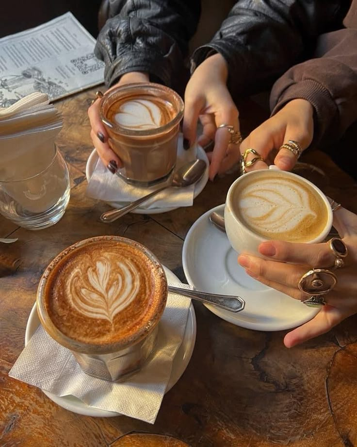
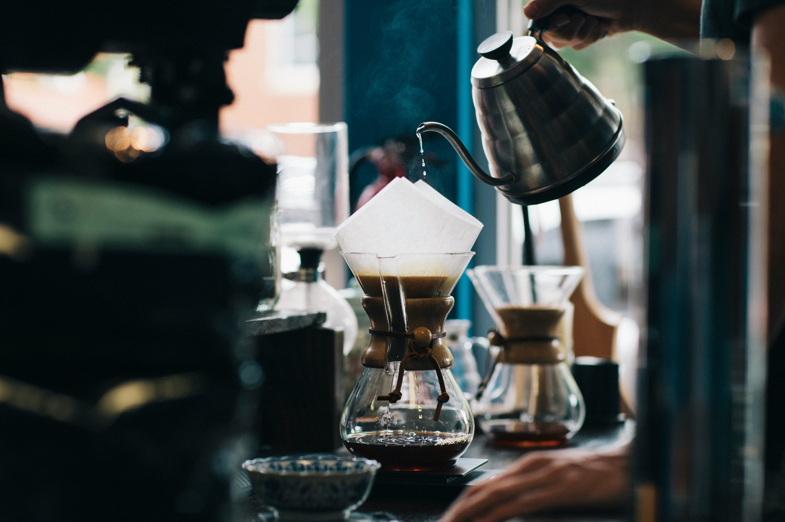

Tostado Artesanal
Cada lote tostado con precision en nuestro local
Granos seleccionados de las mejores fincas de America Latina, tostados artesanalmente en Buenos Aires.



Origen nacio de un sueno: traer el mejor cafe de especialidad a tu mesa. Trabajamos directamente con productores en Colombia, Brasil y Peru, asegurando comercio justo y la maxima calidad.
Cada lote tostado con precision en nuestro local
Relacion directa con productores locales
Equipo certificado por SCA